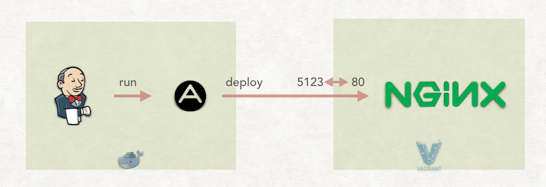
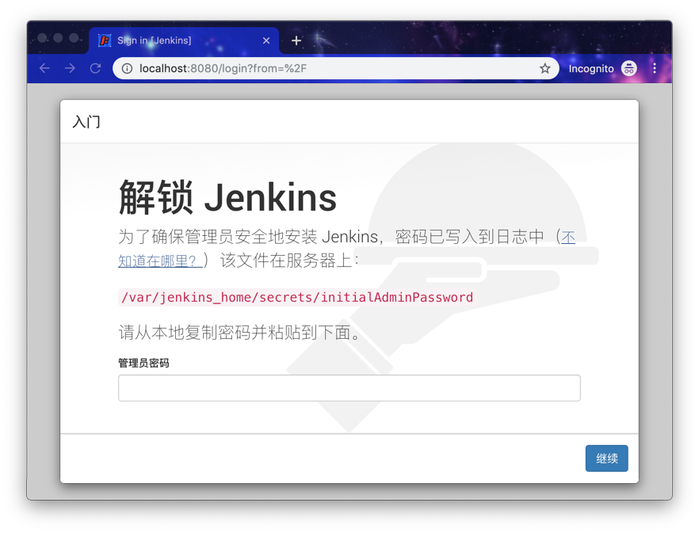
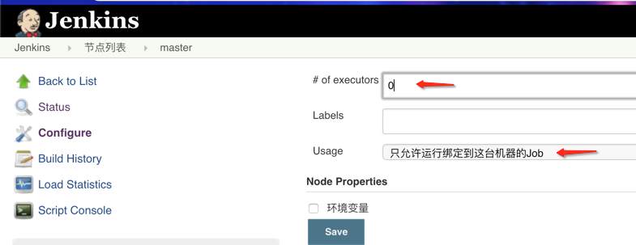
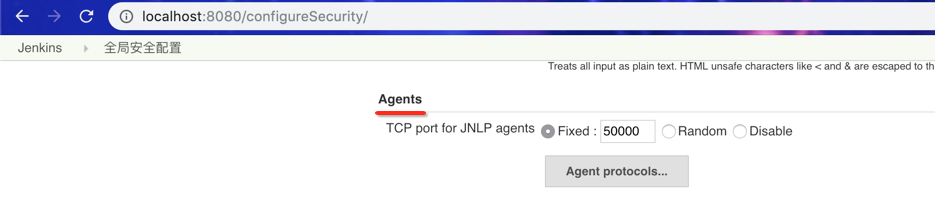
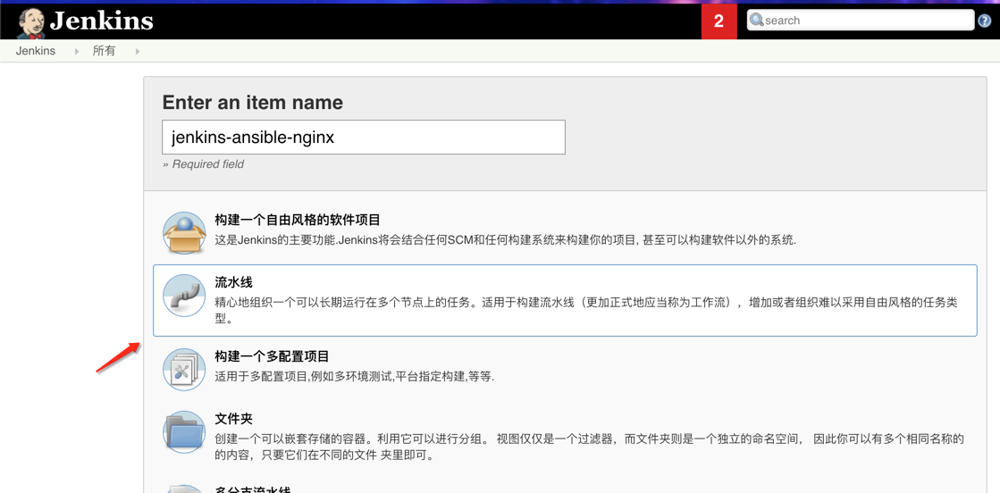
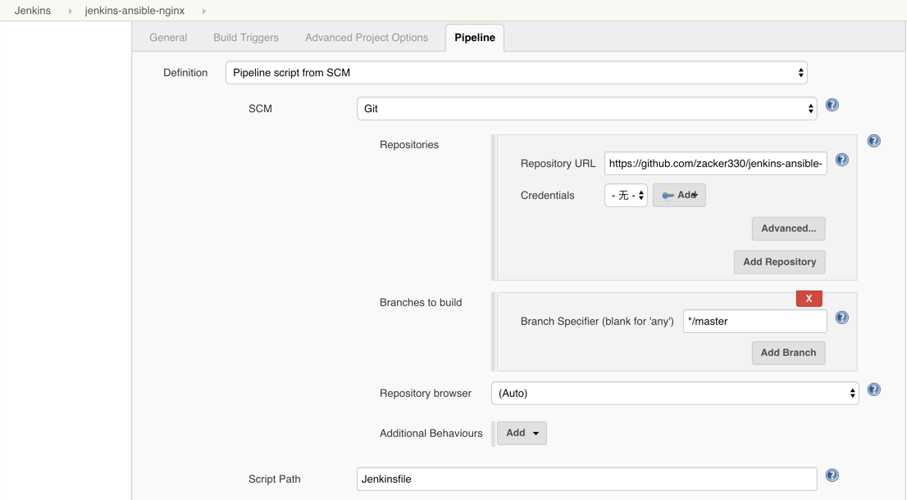
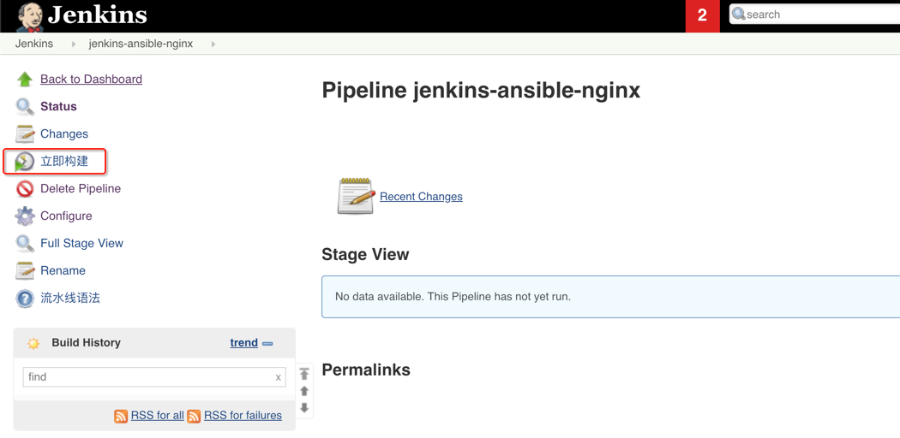
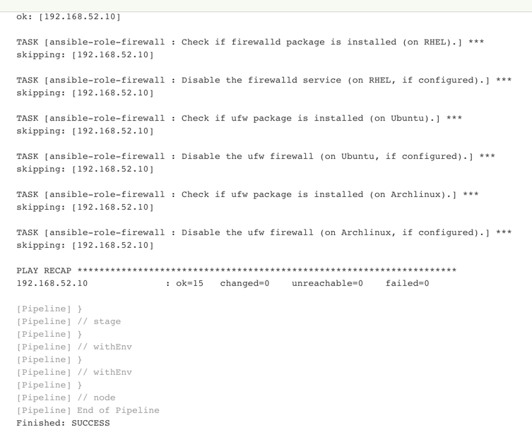
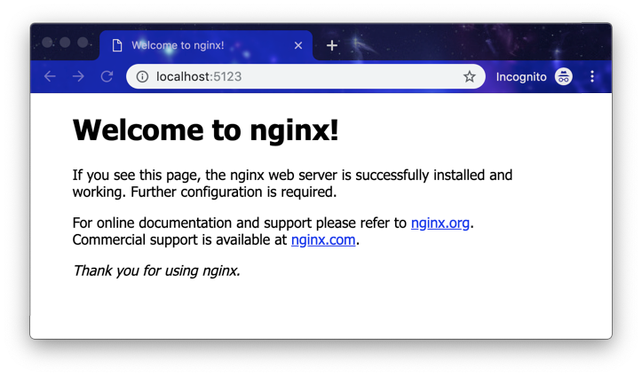
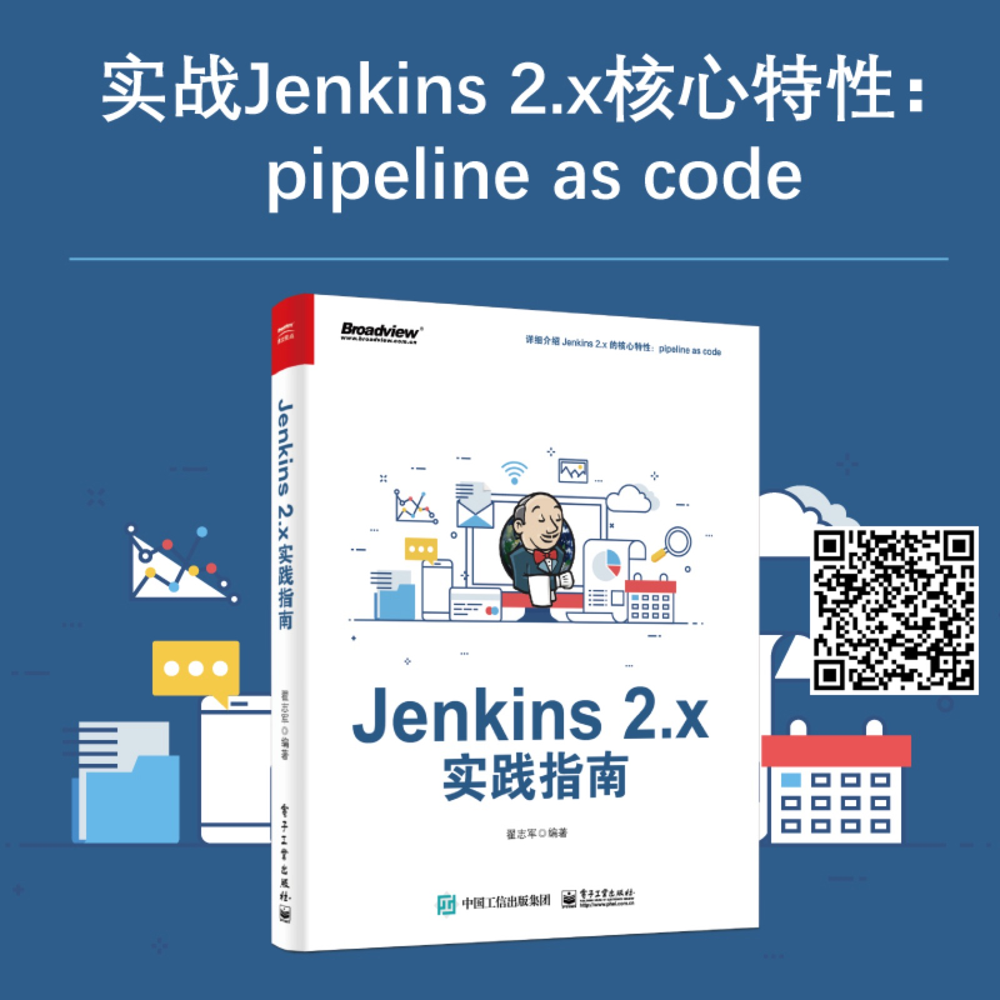

使用 Jenkins + Ansible 实现自动化部署 Nginx
本文介绍如何使用 Jenkins + Ansible 实现对 Nginx 的自动化部署。最终达到的效果有如下几点： 1. 只要你将 Nginx 的配置推送到 GitHub 中，Jenkins 就会自动执行部署，然后目标服务器的 Nginx 配置自动生效。这个过程是幂等（idempotent）的，只要代码不变，执行多少遍，最终效果不变。 2. 如果目标机器没有安装 Nginx，则会自动安装 Nginx。 3. 自动设置服务器防火墙规则。
1. 实验环境介绍
本次实验使用 Docker Compose 搭建 Jenkins 及 Jenkins agent。使用 Vagrant 启动一台虚拟机，用于部署 Nginx。使用 Vagrant 是可选的，读者可以使用 VirtualBox 启动一个虚拟机。使用 Vagrant 完全是为了自动化搭建实验环境。
以下是整个实验环境的架构图： 
注意，图中的 5123 <-> 80 代表将宿主机的 5123 端口请求转发到虚拟机中的 80 端口。
- Vagrant：虚拟机管理工具，通过它，我们可以使用文本来定义、管理虚拟机。
- Ansible：自动化运维工具
- Docker Compose：它是一个用于定义和运行多容器 Docker 应用程序的工具。可以使用 YAML 文件来配置应用程序的服务。
2. 启动实验环境
- 克隆代码并进入文件夹
bash git clone https://github.com/zacker330/jenkins-ansible-nginx.git cd jenkins-ansible-nginx - 构建 Jenkins agent 的镜像
需要自定义 Jenkins agent 镜像有两个原因：
- 本次实验，使用 Swarm 插件实现 Jenkins master 与 agent 之间的通信，所以 Jenkins agent 需要启动 swarm 客户端。
- Jenkins agent 必须支持 Ansible。
bash docker build -f JenkinsSlaveAnsibleDockerfile -t jenkins-swarm-ansible .
- 启动 Jenkins master 及 Jenkins agent
bash docker-compose up -d通过http://localhost:8080访问 Jenkins master，如果出现“解锁密码”页面，如下图，则执行命令docker-compose logs jenkins查看 Jenkins master 启动日志。将日志中的解锁密码输入到表单中。然后就一步步按提示安装即可。  - 安装 Jenkins 插件
本次实验需要安装以下插件：
- Pipeline 2.6：https://plugins.jenkins.io/workflow-aggregator
- Swarm 3.15：https://plugins.jenkins.io/swarm 用于 实现 Jenkins master 与 Jenkins agent 自动连接
- Git 3.9.3：https://plugins.jenkins.io/git
配置 Jenkins master 不执行任务 进入页面：http://localhost:8080/computer/(master)/configure，如下图所示设置： 
确认 Jenkins 安全配置有打开端口，以供 Jenkins agent 连接。 我们设置 Jenkins master 开放的端口，端口可以是固定的 50000 ，也可以设置为随机。设置链接：http://localhost:8080/configureSecurity/。 
启动目标机器，用于部署 Nginx 在命令行中执行以下命令：
vagrant up注意，Vagrantfile 文件中的
config.vm.box值必须改成你的 vagrant box 。
至此，实验环境已经搭建好了。接下来就可以新建 Jenkins 任务了。
3. 在 Jenkins 上创建部署任务
- 新建流水线任务 
配置流水线 配置 Jenkins 任务从远程仓库拉取 Jenkinsfile，如下图所示：  除此之外，不需要其它配置了，是不是很简单？
4. 手工触发一次自动化构建
点击“立即构建”：  最终执行日志如下： 
至此，部署已经完成。以后修改 Nginx 的配置，只需要修改代码，然后推送到远程仓库，就会自动化部署。不需要手工登录到目标机器手工修改了。
最后，我们可以通过访问 http://localhost:5123，如果出现如下页面说明部署成功：

5. 代码讲解
以上步骤并不能看出自动化部署真正做了什么。那是因为我们所有的逻辑都写在代码中。是的，可以说是 everything is code。
接下来我们介绍代码仓库。
% tree -L 2
├── JenkinsSlaveAnsibleDockerfile # Jenkins agent 镜像 Dockerfile
├── Jenkinsfile # 流水线逻辑
├── README.md
├── Vagrantfile # Vagrant 虚拟机定义文件
├── docker-compose.yml # Jenkins 实现环境
├── env-conf # 所有应用配置
│ └── dev # dev 环境的配置
├── deploy # Ansible 部署脚本所在文件夹
│ ├── playbook.yaml
│ └── roles
└── swarm-client.sh # Jenkins swarm 插件的客户端
5.1流水线逻辑
Jenkinsfile 文件用于描述整条流水线的逻辑。代码如下：
pipeline{
// 任务执行在具有 ansible 标签的 agent 上
agent { label "ansible"}
environment{
// 设置 Ansible 不检查 HOST_KEY
ANSIBLE_HOST_KEY_CHECKING = false
}
triggers {
pollSCM('H/1 * * * *')
}
stages{
stage("deploy nginx"){
steps{
sh "ansible-playbook -i env-conf/dev deploy/playbook.yaml"
}
}}}
environment部分：用于定义流水线执行过程中的环境变量。triggers部分：用于定义流水线的触发机制。pollSCM定义了每分钟判断一次代码是否有变化，如果有变化则自动执行流水线。agent部分：用于定义整条流水线的执行环境。stages部分：流水线的所有阶段，都被定义在这部分。
以上只是定义流水线是如何执行的，目前整条流水线只有一个 deploy nginx 阶段，并且只执行了一条 ansible-playbook 命令。但是它并没有告诉我们部署逻辑是怎么样的。
5.2 部署逻辑
所有的部署逻辑，包括 Nginx 的安装启动、配置的更新以及加载，都放在 Ansible 脚本中。对 Ansible 不熟的同学，可以在本文末尾找到介绍 Ansible 的文章。
整个部署逻辑的入口在 deploy/playbook.yaml，代码如下：
---
- hosts: "nginx"
become: true
roles:
# Nginx 的部署
- ansible-role-nginx
# 对防火墙的设置
- ansible-role-firewall
hosts：定义了 playbook 部署的目标主机分组名为nginx。roles：包含了两个执行具体部署动作的 role，至于 role 内部逻辑，不在本文讨论范围，有兴趣的同学阅读源码。
5.3 配置管理
谈到部署，就不得不谈配置管理。
回顾前文中流水线中执行的 shell 命令：ansible-playbook -i env-conf/dev deploy/playbook.yaml 我们通过 -i 参数指定部署时所使用的环境配置。通过这种方式实现环境配置与执行脚本的分离。这样带来以下几个好处：
1. 新增环境时，只需要复制现有的环境，然后将里面的变量的值改成新环境的即可。比如，要对测试环境进行部署，只需要将 -i 参数值改成：env-conf/test。
2. 对配置版本化控制。
本次实验中，各个环境的配置放在 env-conf 目录中，目前只有 dev 环境，以下是 env-conf/ 目录结构：
% cd env-conf/
% tree
└── dev
├── group_vars
│ └── nginx.yaml
├── host_vars
│ └── 192.168.52.10
└── hosts
- hosts文件：Ansible 中通过“分组”来实现对主机的管理。hosts 文件内容如下：
[nginx] 192.168.52.10 - host_vars 目录：用于存放主机级别的配置变量，本例中
192.168.52.10是一个 YAML 格式文件。注意文件名是该主机的 IP。我们在文件中放主机相关的配置，比如 Ansible 连接主机时使用到的用户名和密码。 - group_vars 目录：用于存放组级别的配置变量。比如 nginx.yaml 对应的就是
nginx这个组的的配置变量。文件名与hosts中的组名对应。
总结
到此，我们完整的自动化部署已经讲解完成。但是还遗留下一些问题：
1. 本文只是安装了一个“空”的 Nginx，但是没有介绍 Nginx 真正配置。
2. 目前主机的连接信息（SSH 密码）是明文写在 host_vars/192.168.52.10 文件中的，存在安全风险。
3. 没有介绍如何当 Java 应用部署时，如何自动更新 Nginx 的配置。
本文属于使用 Jenkins + Ansible 实现自动化部署的入门文章，笔者将根据读者的反馈决定是否写续集。
如果觉得本文讲的 Jenkins 流水线逻辑部分不够过瘾，可以考虑入手一本最近才出版的《Jenkins 2.x实践指南》。长按下图进行扫码购买。

附录
- 本次实验环境代码：https://github.com/zacker330/jenkins-ansible-nginx
- 简单易懂 Ansible 系列 —— 解决了什么：https://showme.codes/2017-06-12/ansible-introduce/
- Puppet，Chef，Ansible 的共性：https://showme.codes/2016-01-02/the-nature-of-ansible-puppet-chef/